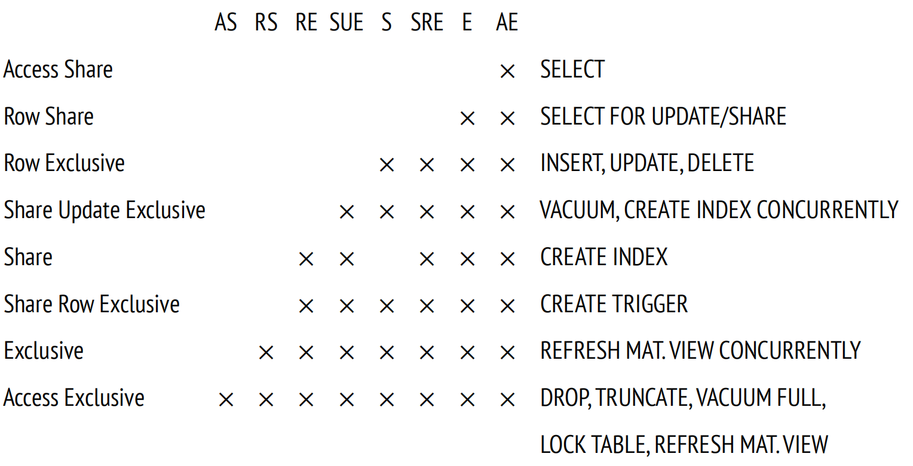

第 12 章：关系级锁
12.1 关于锁
锁用于控制对共享资源的并发访问。
并发访问意味着多个进程试图同时获取同一个资源。这些进程是并行执行 (如果硬件允许) 还是以分时模式顺序执行并没有区别。如果没有并发访问，那么就没有必要获取锁 (例如，共享缓冲区缓存需要加锁，而本地缓存则可以不需要锁)。
在访问资源之前，进程必须获取该资源上的锁；操作完成之后，必须释放这个锁，以使资源可以供其他进程使用。如果锁由数据库系统管理，那么会自动维护操作的既定顺序；如果锁由应用程序控制，则必须由应用程序本身来执行协议。
在底层，锁只是一个定义了锁状态 (是否已获得) 的共享内存块；它还可以提供一些附加信息，比如进程号或获取时间。
正如你所猜测的，共享内存段本身就是一种资源。对此类资源的并发访问由操作系统提供的同步原语 (例如信号量或互斥锁) 控制。它们用于保证访问共享资源的代码严格连续执行。在最底层，这些原语基于原子 CPU 指令 (比如 test-and-set 或 compare-and-swap)。
一般来说，我们可以使用锁来保护任何资源，只要它可以被明确识别并分配一个特定的锁地址。
例如，我们可以锁定一个数据库对象，比如表 (通过系统表中的 oid 标识)、数据页 (通过文件名和该文件中的位置标识)、行版本 (通过页面和该页面内的偏移量标识)。我们还可以锁定内存结构，例如哈希表或者缓冲区 (通过分配的 ID 标识)。 我们甚至可以锁定没有物理表示的抽象资源。
但锁并不总是能够立即获取到：资源可能已经被其他人锁定。然后，进程要么加入队列 (如果这种特定的锁类型允许的话)，要么稍后再试。无论哪种方式，它都必须等待锁被释放。
我需要特别指出两个可能极大影响锁定效率的因素。
粒度，或者说锁的"粒度大小"。在资源形成层次结构时很重要。
例如，表由页面组成，而页面又由元组组成。所有这些对象都可以被锁保护。表级锁是粗粒度的；即使进程需要访问不同的页面或者行，表级锁也禁止并发访问。行级锁是细粒度的，所以没有这个缺点；但是，锁的数量会增加。为了避免锁相关的元数据占用过多的内存，PostgreSQL 可以使用多种方式，其中之一是锁升级：如果细粒度锁的数量超过了一定阈值，那么它们会被更粗粒度的单个锁替换。
锁可以被获取的模式集合。
通常，仅应用两种模式。独占模式与所有其它模式不兼容，包括它自己。共享模式允许资源同时被多个进程锁定。共享模式可用于读取，而独占模式用于写入。通常来说，也可能有其他模式。模式的名称并不重要，重要的是它们的兼容性矩阵。
更细的粒度和对多个兼容模式的支持为并发执行提供了更多基础。
所有锁都可以根据其持续时间进行分类。
长锁可能会获取很长时间 (在大多数情况下，直到事务结束)；它们通常用于保护诸如关系和行之类的资源。这些锁通常由 PostgreSQL 自动管理，但用户仍然可以控制这个过程。
长锁提供了多种模式，可以对数据进行各种并发操作。它们通常具有广泛的基础设施 (包括等待队列、死锁检测和监测机制等功能)，其维护成本无论如何都远低于对受保护数据的操作。
短锁的持续时间只有几分之一秒，而且很少会持续超过几个 CPU 指令；它们通常用于保护共享内存中的数据结构。PostgreSQL 以完全自动化的方式管理这些锁。
短锁通常只提供非常少的模式和基本的基础设施，可能根本没有监测机制。
PostgreSQL 支持各种类型的锁 1。重锁 (在关系和其他对象上获取) 和行级锁被视为长锁。短锁包括内存结构上的各种锁。此外，还有一组独特的谓词锁，尽管其名字如此，实际上它根本不是锁。
12.2 重锁
重锁是长锁。在对象级别获取，主要用于表，但也可应用于其他类型的对象。重锁通常用于保护对象不受并发更新的影响，或在重组期间禁止使用它们，但重锁也可以解决其他需求。这种模糊的定义是有意为之：这种类型的锁可以用于各种目的。唯一的共同点是它们的内部结构。
除非另有明确说明，否则术语 lock 通常意味着重锁。
重锁位于服务器的共享内存中 2，可以在 pg_locks 视图中查看。重锁的总数受到 max_locks_per_transaction 乘以 max_connections 的限制。
所有事务都使用一个共同的锁池，因此一个事务可以获取超过 max_locks_per_transaction 数量的锁。真正重要的是，系统中锁的总数不能超过所定义的限制。由于在服务器启动时会初始化锁池，因此更改这两个参数中的任何一个都需要重启服务器。
如果某个资源已经以一个不兼容的模式锁定，那么试图获取另一个锁的进程会加入到队列之中。等待的进程不会浪费 CPU 时间：它们会进入休眠状态，直到锁被释放并且操作系统将它们唤醒。
如果第一个事务无法继续其操作，直到它获得另一个事务锁定的资源，而后者又需要第一个事务锁定的资源，那么这两个事务可能会陷入死锁。这种情况相对简单；死锁也可能涉及两个以上的事务。由于死锁会导致无限期等待，PostgreSQL 会自动检测它们，并中止其中一个受影响的事务，以确保可以继续正常操作。
不同类型的重锁有不同的用途，保护不同的资源，并支持不同的模式，因此我们将分别考虑它们。
以下列表提供了在 pg_locks 视图的 locktype 列中出现的锁类型名称：
transactionid 和 virtualxid — 事务 ID 上的锁
relation — 关系级锁
tuple — 元组上获取的锁
object — 非关系对象上的锁
extend — 表扩展锁
page — 某些索引类型使用的页级锁
advisory — 咨询锁
几乎所有重锁都是根据需要自动获取的，并在相应事务完成时自动释放。但也有一些例外：例如，可以显式设置关系级锁，而咨询锁始终由用户管理。
12.3 事务 ID 上的锁
每个事务总是持有其自身事务 ID 的独占锁 (无论是虚拟的还是实际的，如果有的话)。
PostgreSQL 为此提供了两种锁定模式，独占模式和共享模式。其兼容矩阵非常简单：共享模式与自身兼容，而独占模式不能与任何模式组合。
为了跟踪特定事务的完成情况，进程可以在任何模式下请求对该事务 ID 的锁。由于事务本身已经持有对其自身 ID 的独占锁，因此无法获取其他的锁。请求该锁的进程会加入队列并进入休眠状态。一旦事务完成，锁就会被释放，排队的进程就会被唤醒。显然，由于相应的资源已经不存在了，它不会设法获取锁，但这个锁本来就不是真正需要的。
在一个单独的会话中启动一个事务，并获取该后端进程的进程 ID (PID)：
=> BEGIN; => SELECT pg_backend_pid(); pg_backend_pid −−−−−−−−−−−−−−−− 28980 (1 row)
已启动的事务持有对其自身虚拟 ID 的独占锁：
=> SELECT locktype, virtualxid, mode, granted
FROM pg_locks WHERE pid = 28980;
locktype | virtualxid | mode | granted
−−−−−−−−−−−−+−−−−−−−−−−−−+−−−−−−−−−−−−−−−+−−−−−−−−−
virtualxid | 5/2 | ExclusiveLock | t
(1 row)此处的 locktype 是锁的类型，virtualxid 是虚拟事务ID (用于标识锁定的资源)，mode 是锁定模式 (在本例中为独占模式)。granted 标志显示是否已获取到请求的锁。
一旦事务获取了真实 ID，相应的锁就会被添加到这个列表中：
=> SELECT pg_current_xact_id(); pg_current_xact_id −−−−−−−−−−−−−−−−−−−− 122849 (1 row)
=> SELECT locktype, virtualxid, transactionid AS xid, mode, granted FROM pg_locks WHERE pid = 28980;
locktype | virtualxid | xid | mode | granted
−−−−−−−−−−−−−−−+−−−−−−−−−−−−+−−−−−−−−+−−−−−−−−−−−−−−−+−−−−−−−−−
virtualxid | 5/2 | | ExclusiveLock | t
transactionid | | 122849 | ExclusiveLock | t
(2 rows)现在，这个事务对其两个 ID 均持有独占锁。
12.4 关系级锁
PostgreSQL 提供了多达八种模式的锁，用于锁定关系 (表、索引或任何其他对象) 3。这样的多样性可以使一个关系上允许并发运行的命令数量最大化。
下面显示了兼容性矩阵，并扩展了需要相应锁模式的命令示例。没有必要记住所有这些模式或试图找出它们命名背后的逻辑，但是翻阅这些数据，得出一些一般性的结论，并在需要时参考这个表肯定是有用的。
Access Share 是最弱的模式；它可以与其他任何模式一起使用，除了 Access Exclusive，后者与所有模式都不兼容。因此，SELECT 命令几乎可以与任何操作并行执行，但不允许删除正在查询的表。
前四种模式允许并发堆修改，而其他四种模式不允许。例如， CREATE INDEX 命令使用 Share 模式，此模式与自身兼容 (因此你可以在一个表上同时创建多个索引)，并且与只读操作使用的模式相兼容。因此，SELECT 命令可以与索引创建并行运行，而 INSERT，UPDATE 和 DELETE 命令将被阻塞。
相反，未完成的修改堆数据的事务会阻塞 CREATE INDEX 命令。作为替代，你可以使用 CREATE INEDX CONCURRENTLY，它使用了更弱的 Share Update Exclusive 模式：创建索引需要的时间更长 (此操作甚至可能失败)，但作为回报，它允许并发数据修改。
ALTER TABLE 命令有多种模式，它们使用不同的锁模式 (Share Update Exclusive、Share Row Exclusive、Access Exclusives)。所有模式都在文档中有所描述 4。
本书这一部分的例子仍然基于 accounts 表：
=> TRUNCATE accounts;
=> INSERT INTO accounts(id, client, amount)
VALUES
(1, 'alice', 100.00),
(2, 'bob', 200.00),
(3, 'charlie', 300.00);我们需要多次访问 pg_locks 表，所以让我们创建一个视图以在单独的列中显示所有 ID，从而使输出更加简洁：
=> CREATE VIEW locks AS
SELECT pid,
locktype,
CASE locktype
WHEN 'relation' THEN relation::regclass::text
WHEN 'transactionid' THEN transactionid::text
WHEN 'virtualxid' THEN virtualxid
END AS lockid,
mode,
granted
FROM pg_locks
ORDER BY 1, 2, 3;第一个会话中仍在运行的事务将更新一行。这个操作会锁定 accounts 表及其所有索引，从而在 Row Exclusive 模式下获得了两个新的 relation 类型的锁：
=> UPDATE accounts SET amount = amount + 100.00 WHERE id = 1;
=> SELECT locktype, lockid, mode, granted
FROM locks WHERE pid = 28991;
locktype | lockid | mode | granted
−−−−−−−−−−−−−−−+−−−−−−−−−−−−−−−+−−−−−−−−−−−−−−−−−−+−−−−−−−−−
relation | accounts | RowExclusiveLock | t
relation | accounts_pkey | RowExclusiveLock | t
transactionid | 122849 | ExclusiveLock | t
virtualxid | 5/2 | ExclusiveLock | t
(4 rows)12.5 等待队列
重锁形成了一个公平的等待队列 5。如果进程试图获取与当前锁或与队列中其他进程已请求的锁不兼容的锁，那么这个进程就会加入队列。
当第一个会话在进行更新时，让我们在另一个会话中尝试在此表上创建索引：
=> SELECT pg_backend_pid(); pg_backend_pid −−−−−−−−−−−−−−−− 29459 (1 row) => CREATE INDEX ON accounts(client);
命令会夯住，等待资源的释放。事务试图在共享模式下锁定此表，但无法做到：
=> SELECT locktype, lockid, mode, granted
FROM locks WHERE pid = 29459;
locktype | lockid | mode | granted
−−−−−−−−−−−−+−−−−−−−−−−+−−−−−−−−−−−−−−−+−−−−−−−−−
relation | accounts | ShareLock | f
virtualxid | 6/3 | ExclusiveLock | t
(2 rows)现在于第三个会话中执行 VACUUM FULL 命令。它也会加入队列，因为它需要获取 Access Exclusive 模式的锁，这与其他所有模式冲突：
=> SELECT pg_backend_pid(); pg_backend_pid −−−−−−−−−−−−−−−− 29662 (1 row) => VACUUM FULL accounts;
=> SELECT locktype, lockid, mode, granted
FROM locks WHERE pid = 29662;
locktype | lockid | mode | granted
−−−−−−−−−−−−−−−+−−−−−−−−−−+−−−−−−−−−−−−−−−−−−−−−+−−−−−−−−−
relation | accounts | AccessExclusiveLock | f
transactionid | 122853 | ExclusiveLock | t
virtualxid | 7/4 | ExclusiveLock | t
(3 rows)所有后续的竞争者现在都必须加入队列，无论其锁定模式如何。即使是简单的 SELECT 查询也会老老实实排在 VACUUM FULL 之后，尽管它与执行更新的第一个会话所持有的 Row Exclusive 兼容。
=> SELECT pg_backend_pid(); pg_backend_pid −−−−−−−−−−−−−−−− 29872 (1 row) => SELECT * FROM accounts;
=> SELECT locktype, lockid, mode, granted
FROM locks WHERE pid = 29872;
locktype | lockid | mode | granted
−−−−−−−−−−−−+−−−−−−−−−−+−−−−−−−−−−−−−−−−−+−−−−−−−−−
relation | accounts | AccessShareLock | f
virtualxid | 8/3 | ExclusiveLock | t
(2 rows)pg_blocking_pids 函数提供了所有等待的高层次概览情况。它显示了排在指定进程前面的所有进程 ID，这些进程已经持有或想要获取一个不兼容的锁：
=> SELECT pid,
pg_blocking_pids(pid),
wait_event_type,
state,
left(query,50) AS query
FROM pg_stat_activity
WHERE pid IN (28980,29459,29662,29872) \gx
−[ RECORD 1 ]−−−−+−−−−−−−−−−−−−−−−−−−−−−−−−−−−−−−−−−−−−−−−−−−−−−−−−−−
pid | 28980
pg_blocking_pids | {}
wait_event_type | Client
state | idle in transaction
query | UPDATE accounts SET amount = amount + 100.00 WHERE
−[ RECORD 2 ]−−−−+−−−−−−−−−−−−−−−−−−−−−−−−−−−−−−−−−−−−−−−−−−−−−−−−−−−
pid | 29459
pg_blocking_pids | {28980}
wait_event_type | Lock
state | active
query | CREATE INDEX ON accounts(client);
−[ RECORD 3 ]−−−−+−−−−−−−−−−−−−−−−−−−−−−−−−−−−−−−−−−−−−−−−−−−−−−−−−−−
pid | 29662
pg_blocking_pids | {28980,29459}
wait_event_type | Lock
state | active
query | VACUUM FULL accounts;
−[ RECORD 4 ]−−−−+−−−−−−−−−−−−−−−−−−−−−−−−−−−−−−−−−−−−−−−−−−−−−−−−−−−
pid | 29872
pg_blocking_pids | {29662}
wait_event_type | Lock
state | active
query | SELECT * FROM accounts;要获得更多详细信息，你可以查看 pg_locks 表中提供的信息 6。
一旦事务完成 (无论提交还是中止)，该事务所有的锁都会被释放 7。队列中第一个进程获得所请求的锁并被唤醒。
此处，提交第一个会话中的事务会使所有排队的进程顺序执行：
=> ROLLBACK; ROLLBACK
CREATE INDEX
VACUUM
id | client | amount −−−−+−−−−−−−−−+−−−−−−−− 1 | alice | 100.00 2 | bob | 200.00 3 | charlie | 300.00 (3 rows)
-
backend/storage/lmgr/README ↩︎
-
backend/storage/lmgr/lock.c ↩︎
-
postgresql.org/docs/14/explicit-locking#LOCKING-TABLES.html ↩︎
-
postgresql.org/docs/14/sql-altertable.html ↩︎
-
backend/storage/lmgr/lock.c, LockAcquire function ↩︎
-
wiki.postgresql.org/wiki/Lock_dependency_information ↩︎
-
backend/storage/lmgr/lock.c, LockReleaseAll & LockRelease functions ↩︎